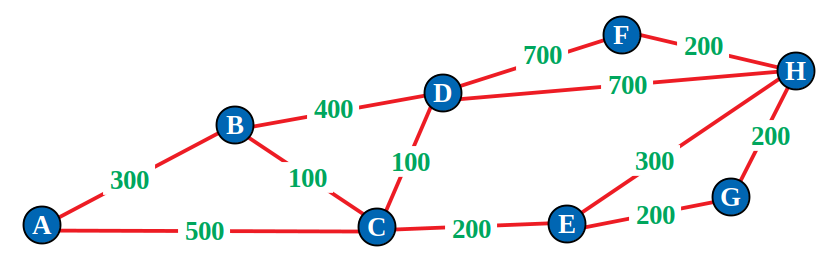
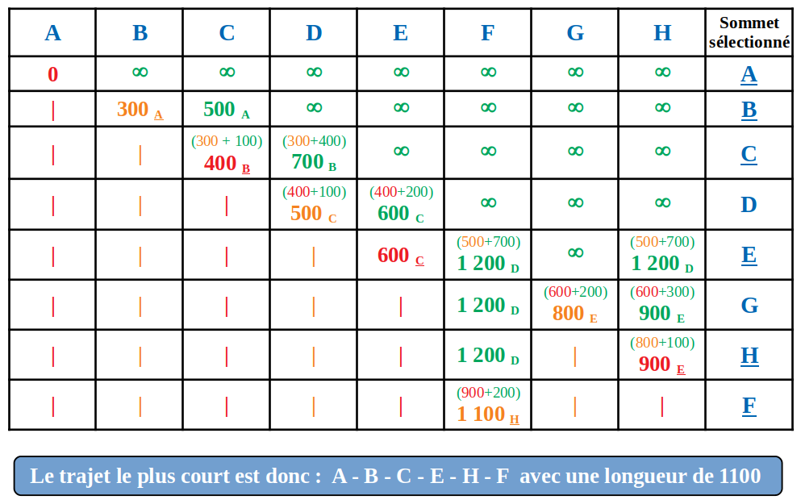

Généralités
Le principe est le même, quelle que soit l'application utilisée : le logiciel a besoin de connaître le lieu
de départ, soit en la configurant manuellement, soit grâce à la puce GPS du téléphone ou de l'appareil utilisé.
Il faut ensuite saisir le lieu d'arrivée manuellement et éventuellement des étapes.
le logiciel déterminera le temps de trajet en fonction de la distance entre les deux points choisis.
Il tient compte des limitations de vitesse et des routes empruntées.
Algorithme de Dijkstra
Pour trouver le chemin le plus court les applications représentent la carte par un graphe et utilisent
l'algorithme de Dijkstra pour trouver le chemin le plus court entre deux sommets.
Exemple : On va appliquer l'algorithme de Dijkstra pour trouver le plus court chemin pour aller du sommet A au sommet F dans le graphe suivant.

Pour cela on applique la méthode suivante :
-
On dessine d'abord un tableau avec une colonne pour chaque sommet du graphe, plus une colonne à droite pour indiquer le sommet sélectionné à chaque étape.
-
Sur la première ligne, on affecte le coefficient 0 à l'origine du trajet et le coefficient
∞ à tous les autres sommets. On sélectionne le sommet de départ et on raye toutes les cases de sa colonne.
-
Pour la deuxième ligne, pour tous les sommets adjacents au sommet de départ, on reporte le poids de l'arête correspondante dans le tableau en mettant en indice le point d'origine. Pour tous les autres sommets on reporte le coefficient ∞ . On sélectionne ensuite le sommet ayant le coefficient le plus faible et on raye les cases suivantes de sa colonne.
-
Pour les lignes suivantes, pour tous les sommets adjacents au dernier sommet sélectionné, on calcule par somme la longueur du trajet depuis le point d'origine et on reporte ce calcul, uniquement si il est plus petit que le coefficient situé au dessus. On mentionne en indice le sommet précédent. On sélectionne le sommet dont le coefficient est le plus faible et on raye les cases suivantes de sa colonne. etc ...
-
On s'arrête quand on a atteint le sommet d'arrivé du trajet. On obtient alors le trajet le plus court en partant du point d'arrivé (ici F) et on remonte jusqu'au point de départ (ici A) en utilisant les sommets mentionnés en indice
(ceux qui sont soulignés) de bas en haut.

Quiz 6